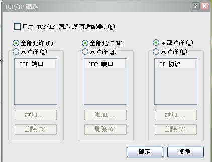
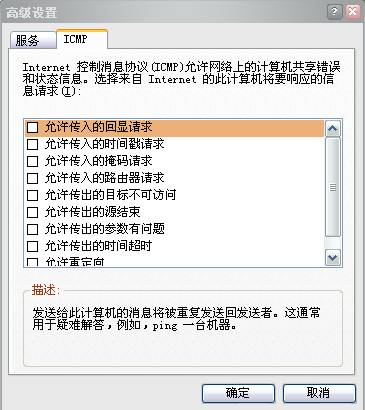

1、主机信息探测的原理
1.1 基于ICMP echo扫描
Ping是最常用的，也是最简单的探测手段，其实这并不能算是真正意义上的扫描。通过Ping命令判断在一个网络上主机是否开机的原理是：Ping向目标发送一个回显（Type＝8）的ICMP数据包，当主机得到请求后，会再返回一个回显（Type＝0）的数据包，通过是否收到Ping的响应包就可以判断主机是否开机。而且Ping程序一般是直接实现在系统内核中的，而不是一个用户进程，是不易被发现的。
1.2 基于高级ICMP的扫描
Ping是利用ICMP协议实现的，高级的ICMP扫描技术主要利用ICMP协议最基本的用途――报错。根据网络协议，如果接收到的数据包协议项出现了错误，那么接收端将产生一个“Destination Unreachable”（目标主机不可达）ICMP的错误报文。这些错误报文不是主动发送的，而是由于错误，根据协议自动产生的。
当IP数据包出现Checksum（校验和）和版本的错误的时候，目标主机将抛弃这个数据包；如果是Checksum出现错误，那么路由器就直接丢弃这个数据包。有些主机比如AIX、HP/UX等，是不会发送ICMP的Unreachable数据包的。
可以向目标主机发送一个只有IP头的IP数据包，此时目标主机将返 “Destination Unreachable”的ICMP错误报文。如果向目标主机发送一个坏IP数据包，比如不正确的IP头长度，目标主机将返回“Parameter Problem”（参数有问题）的ICMP错误报文。注意：如果是在目标主机前有一个防火墙或者一个其他的过滤装置，可能过滤掉提出的要求，从而接收不到任何的回应。这时可以使用一个非常大的协议数字作为IP头部的协议内容，而且这个协议数字至少在今天还没有被使用，主机一定会返回Unreachable；如果没有Unreachable的ICMP数据包返回错误提示，那么，就说明被防火墙或者其他设备过滤了，也可以用这个方法探测是否有防火墙或者其他过滤设备存在。
1.3 全连接扫描(TCP connect Scan)
全连接扫描是TCP端口扫描的基础，现有的全连接扫描有TCP connect（）扫描和TCP反向ident扫描等。其中TCP
connect（）扫描的实现原理如下所述：扫描主机通过TCP/IP协议的三次握手与目标主机的指定端口建立一次完整的连接。连接由系统调用connect开始。如果端口开放，则连接将建立成功；否则，若返回-1则表示端口关闭。建立连接成功：响应扫描主机的SYN/ACK连接请求，这一响应表明目标端口处于监听（打开）的状态。如果目标端口处于关闭状态，则目标主机会向扫描主机发送RST的响应。
全连接扫描技术的一个最大的优点是不需要任何权限，系统中的任何用户都有权利使用这个调用。另一个好处是速度快。如果对每个目标端口以线性的方式，使用单独的“connect()”函数调用，那么将会花费相当长的时间，用户可以同时打开多个套接字，从而加速扫描。使用非阻塞I/O允许用户设置一个低的时间以用尽周期，并同时观察多个套接字。但这种方法的缺点是很容易被发觉，并且很容易被过滤掉。目标计算机的日志文件会显示一连串的连接和连接出错的服务消息，目标计算机用户发现后就能很快使它关闭。
2、Nmap扫描工具
2.1 Nmap简介
Nmap是俗称“扫描器之王”的工具软件，由此可见他的确非同一般。Nmap运行通常会得到被扫描主机端口的列表，给出well known端口的服务名（如果可能）、端口号、状态和协议等信息。每个端口的状态有：open、filtered、unfiltered。open状态意味着目标主机能够在这个端口使用accept（）系统调用接受连接。filtered状态表示防火墙、包过滤和其他的网络安全软件掩盖了这个端口，禁止Nmap探测其是否打开。unfiltered表示这个端口关闭，并且没有防火墙/包过滤软件来隔离Nmap的探测企图。通常情况下，端口的状态基本都是unfiltered状态，只有在大多数被扫描的端口处于filtered状态下，才会显示处于unfiltered状态的端口。
根据使用的功能选项，Nmap也可以报告远程主机的下列特征：使用的操作系统、TCP序列、运行绑定到每个端口上的应用程序的用户名、DNS名、主机地址是否是欺骗地址，以及其他一些东西。
Nmap还提供了一些高级的特征，例如，通过TCP/IP协议栈特征探测操作系统类型，秘密扫描，动态延时和重传计算，并行扫描，通过并行Ping扫描探测关闭的主机、诱饵扫描、避开端口过滤检测、直接RPC扫描（无须端口影射）、碎片扫描，以及灵活的目标和端口设定。Nmap命令的基本语法格式如下：nmap [Scan Type（s）]
[Options] <target specification>从语法格式中可以看出，它主要包括“Scan
Type（s）”（扫描类型）和“Options”（选项）两部分，而“<target
specification>”部分是扫描目标说明，可以是IP地址，也可以是主机名或域名。在“Scan Type（s）” 和“Options”这两大部分却包含了非常强大的功能，其可选参数非常之多。如图3-31所示的是Nmap其中的一部分功能。直接在命令提示符下输入Nmap命令即可得到如图3-31所示的功能和使用介绍。
2.2 命令详解
2.2.1扫描类型
首先介绍“Scan Type（s）”部分，即扫描类型选项。
1）-sT
TCP connect()扫描：这是最基本的TCP扫描方式。Connect()是一种系统调用，由操作系统提供，用来打开一个连接。如果目标端口有程序监听，connect()就会成功返回，否则这个端口是不可达的。这项技术最大的优点是，无须Root或Administrator权限，任何UNIX或Windows用户都可以自由使用这个系统调用。这种扫描很容易被检测到，在目标主机的日志中会记录大批的连接请求以及错误信息。
2）-sS
TCP同步扫描（TCP SYN）：因为不必全部打开一个TCP连接，所以这项技术通常称为半开（half-open）扫描。可以发出一个TCP同步包（SYN），然后等待回应，如果对方返回SYN/ACK（响应）包就表示目标端口正在监听；如果返回RST数据包，就表示目标端口没有监听程序；如果收到一个SYN/ACK包，源主机就会马上发出一个RST（复位）数据包断开和目标主机的连接，这实际上是由操作系统内核自动完成的。这项技术最大的好处是，很少有系统能够把这记入系统日志。不过，需要Root权限来定制SYN数据包。
3）-sN/-sF/sX
空（Null）扫描、秘密FIN数据包扫描和圣诞树（Xmas Tree）模式：在SYN扫描都无法确定的情况下使用。一些防火墙和包过滤软件能够对发送到被限制端口的SYN数据包进行监视，而且有些程序比如synlogger和courtney能够检测那些扫描。这些高级的扫描方式可以逃过这些干扰。使用-sF、-sX或者-sN扫描显示所有的端口都是关闭的，而使用SYN扫描显示有打开的端口，可以确定目标主机可能运行的是Windwos系统。现在这种方式没有什么太大的用处，因为Nmap有内嵌的操作系统检测功能。还有其他几个系统使用和Windows同样的处理方式，包括Cisco、BSDI、HP/UX、MYS、IRIX。在应该抛弃数据包时，以上这些系统都会从打开的端口发出复位数据包。
4）-sP
Ping扫描：有时只是想知道此时网络上哪些主机正在运行。通过指定网络内的每个IP地址发送ICMP echo请求数据包，Nmap就可以完成这项任务。如果主机正在运行就会作出响应，但也有一些站点（如microsoft.com）阻塞ICMP echo请求数据包。在默认的情况下Nmap也能够向80号端口发送TCP ACK包，如果收到一个RST包，就表示主机正在运行。Nmap使用的第三种技术是：发送一个SYN包，然后等待一个RST或者SYN/ACK包。对于非Root用户，Nmap使用connect()方法。
Nmap在任何情况下都会进行Ping扫描，只有目标主机处于运行状态，才会进行后续的扫描。如果只是想知道目标主机是否运行，而不想进行其他扫描，才会用到这个选项。
5）-sU
UDP扫描：如果想知道在某台主机上提供哪些UDP（用户数据报协议，RFC768）服务，可以使用这种扫描方法。Nmap首先向目标主机的每个端口发出一个0字节的UDP包，如果收到端口不可达的ICMP消息，端口就是关闭的，否则就假设它是打开的。
6）-sA
ACK扫描：这项高级的扫描方法通常用来穿过防火墙的规则集。通常情况下，这有助于确定一个防火墙是功能比较完善的或者是一个简单的包过滤程序，只是阻塞进入的SYN包。
这种扫描是向特定的端口发送ACK包（使用随机的应答/序列号）。如果返回一个RST包，这个端口就标记为unfiltered状态。如果什么都没有返回，或者返回一个不可达ICMP消息，这个端口就归入filtered类。注意，Nmap通常不输出unfiltered的端口，所以在输出中通常不显示所有被探测的端口。显然，这种扫描方式不能找出处于打开状态的端口。
7）-sW
滑动窗口的扫描：这项高级扫描技术非常类似于ACK扫描，除了它有时可以检测到处于打开状态的端口，因为滑动窗口的大小是不规则的，有些操作系统可以报告其大小。这些系统至少包括：某些版本的AIX、Amiga、BeOS、BSDI、Cray、Tru64 UNIX、DG/UX、OpenVMS、Digital
UNIX、OpenBSD、OpenStep、QNX、Rhapsody、SunOS 4.x、Ultrix、VAX、VXWORKS。从nmap-hackers邮件3列表的文档中可以得到完整的列表。
8）-sR
RPC扫描：这种方法和Nmap的其他不同的端口扫描方法结合使用。选择所有处于打开状态的端口向它们发出SunRPC程序的null命令，以确定它们是否是RPC端口，如果是，就确定是哪种软件及其版本号，由此能够获得防火墙的一些信息。诱饵扫描现在还不能和RPC扫描结合使用。
9）-b
FTP反弹攻击（bounce attack）：FTP协议有一个很有意思的特征，它支持代理FTP连接。也就是说，能够从evil.com连接到FTP服务器target.com，并且可以要求这台 FTP服务器为自己发送Internet上任何地方的文件。
传递给-b功能选项的参数，是要作为代理的FTP服务器。语法格式为：
-b usernameassword@serverort
除了server以外，其余都是可选的。
2.2.2选项
在“Options”部分中可选择的选项如下。
1）-P0
在扫描之前，不必Ping主机。有些网络的防火墙不允许ICMP echo请求穿过，使用这个选项可以对这些网络进行扫描。
2）-PT
扫描之前，使用TCP Ping确定哪些主机正在运行。Nmap不是通过发送ICMP
echo请求包然后等待响应来实现这种功能，而是向目标网络（或者单一主机）发出TCP ACK包然后等待回应。如果主机正在运行就会返回RST包。只有在目标网络/主机阻塞了Ping包，而仍旧允许对其进行扫描时，这个选项才有效。对于非 Root用户，使用connect()系统调用来实现这项功能。使用-PT <端口号>来设定目标端口。默认的端口号是80，因为这个端口通常不会被过滤。
3）-PS
对于Root用户，这个选项让Nmap使用SYN包而不是ACK包来对目标主机进行扫描。如果主机正在运行就返回一个RST包（或者一个SYN/ACK包）。
4）-PI
设置这个选项，让Nmap使用真正的Ping（ICMP echo请求）来扫描目标主机是否正在运行。使用这个选项让Nmap发现正在运行的主机的同时，Nmap也会对用户的直接子网广播地址进行观察。直接子网广播地址是一些外部可达的IP地址，把外部的包转换为一个内向的IP广播包，向一个计算机子网发送。这些IP广播包应该删除，因为会造成拒绝服务攻击（如Smurf）。
5）-PB
这是默认的Ping扫描选项。它使用ACK（-PT）和ICMP（-PI）两种扫描类型并行扫描。如果防火墙能够过滤其中一种包，使用这种方法，就能够穿过防火墙。
6）-O
这个选项激活对TCP/IP指纹特征（fingerprinting）的扫描，获得远程主机的标志。换句话说，Nmap使用一些技术检测目标主机操作系统网络协议栈的特征。Nmap使用这些信息建立远程主机的指纹特征，把它和已知的操作系统指纹特征数据库作比较，就可以知道目标主机操作系统的类型。
7）-I
这个选项打开Nmap的反向标志扫描功能。Dave Goldsmith 1996年向bugtap发出的邮件注意到这个协议，identd协议（RFC 1413）允许使用TCP连接给出任何进程拥有者的用户名，即使这个进程并没有初始化连接。例如，可以连接到HTTP端口，接着使用identd确定这个服务器是否由Root用户运行。这种扫描只能在同目标端口建立完全的TCP连接时（例如-sT扫描选项）才能成功。使用-I选项，远程主机的identd进程就会查询在每个打开的端口上监听的进程的拥有者。显然，如果远程主机没有运行identd程序，这种扫描方法无效。
3、对扫描工具的防范
要针对这些扫描进行防范，首先要禁止ICMP的回应，当对方进行扫描的时候，由于无法得到ICMP的回应，扫描器会误认为主机不存在，从而达到保护自己的目的。再有就是关闭端口。关闭闲置和有潜在危险的端口。这个方法比较被动，它的本质是将除了用户需要用到的正常计算机端口之外的其他端口都关闭掉。因为就黑客而言，所有的端口都可能成为攻击的目标。
在Windows NT核心系统(Windows
2000/XP/ 2003)中要关闭掉一些闲置端口是比较方便的，可以采用“定向关闭指定服务的端口”(黑名单)和“只开放允许端口的方式”(白名单)进行设置。计算机的 一些网络服务会有系统分配默认的端口，将一些闲置的服务关闭掉，其对应的端口也会被关闭了。
进入“控制面板”→“管理工具”→“服务”项内，关闭掉计算机的一些没有使用的服务(如FTP服务、DNS服务、IIS Admin服务等等)，它们对应的端口也被停用了。至于“只开放允许端口的方式”，可以利用系统的“TCP/IP筛选”功能实现，设置的时候，“只允许” 系统的一些基本网络通讯需要的端口即可。如下图所示：

还可以使用网络防火墙屏蔽端口。现在市面上几乎所有网络防火墙都能够抵御端口扫描，在默认安装后，应该检查一些防火墙所拦截的端口扫描规则是否被选中，否则它会放行端口扫描，而只是在日志中留下信息而已。Windows XP SP2自带的防火墙可以完成ICMP的设置，启用这项功能的设置非常简单：执行“控制面板” → “Windows 防火墙”，点击“高级”选项卡，选择系统中已经建立的 Internet连接方式(宽带连接)，点击旁边的“设置”按钮打开“高级设置”窗口，点击“ICMP”选项卡，确认没有勾选“允许传入的回显请求”，最后点击“确定”即可。如图2所示：
